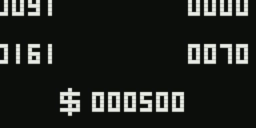
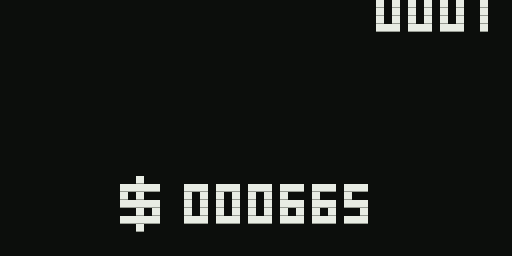
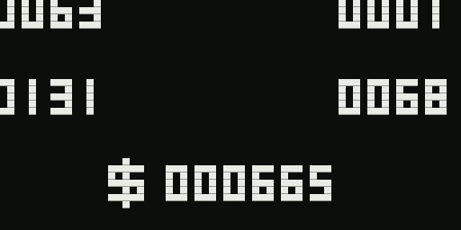

Acey Duecey
Graeme V. Samways · DREAMER no. 2 (1980-10) p. 9 1K RAM



Two random numbers are shown, the larger on the left, with their difference at the top left. Bet that a third random number lands between them: you win if it does and lose if it does not. When your money runs out the score is erased with a bleep.
Keys
0 draws the third number; any other key deals a new pair; F restarts when broke.
Files
| File | Version | Load | Run |
|---|---|---|---|
| Acey Duecey.c8 | main | 0200-03FF | C000 |
Listing as transcribed (with notes): acey_duecey.txt
Source
DREAMER no. 2 on archive.org, p. 9 (PDF page 9). Author: Graeme V. Samways.
Corrections applied
None.
Open doubts
- The article says a loss subtracts the difference, but the code (029A = 87E5) subtracts 256 minus the difference; left as printed.